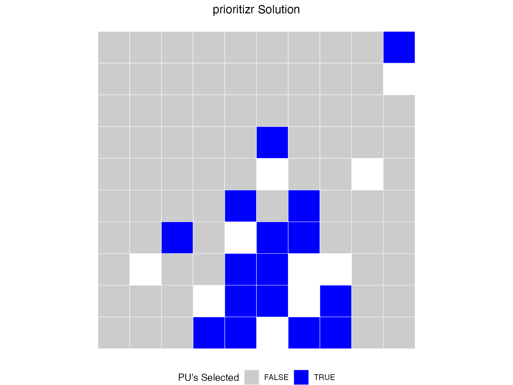
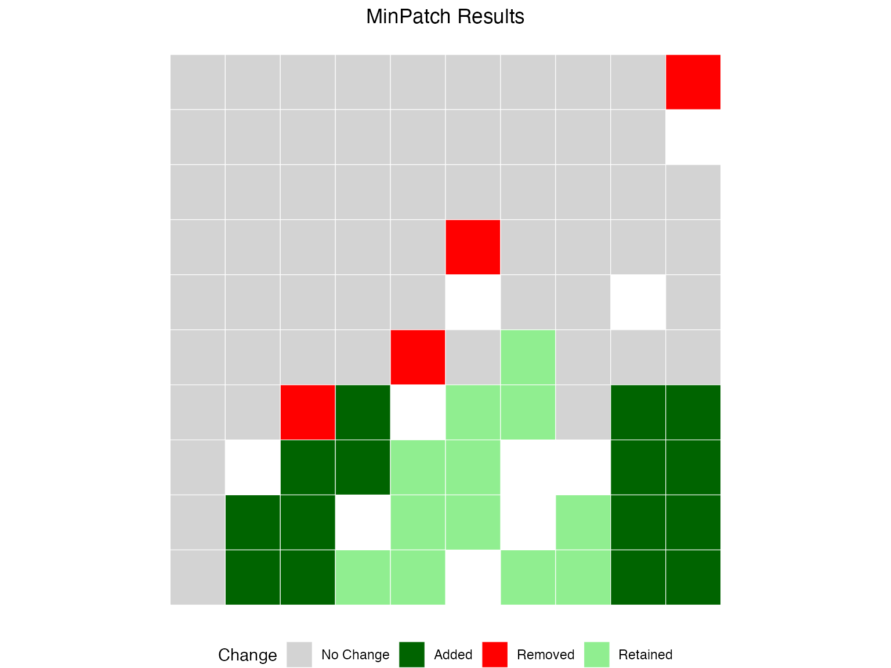
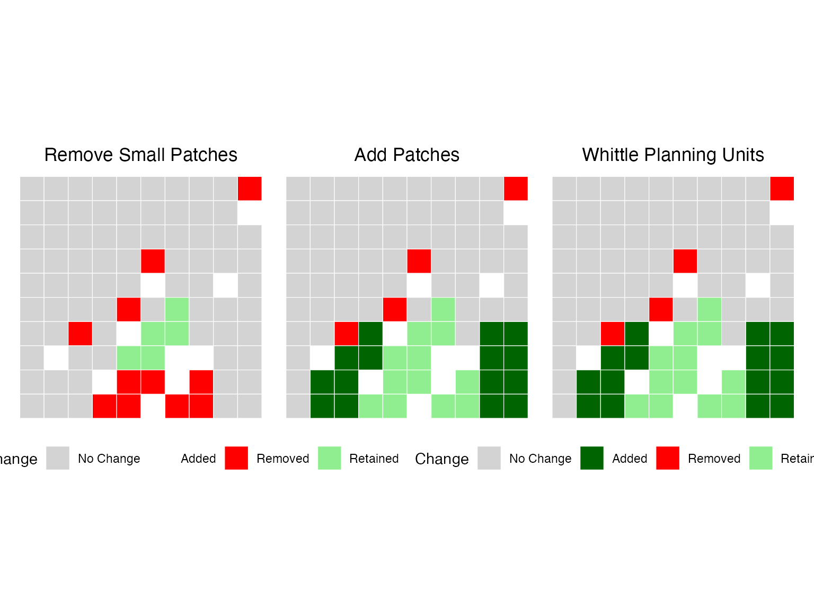

Introduction
This vignette demonstrates how to use MinPatch with real conservation planning data from prioritizr. We’ll use the simulated dataset included with prioritizr to show a complete workflow from problem formulation through MinPatch post-processing.
library(minpatch)
library(prioritizr)
library(sf)
library(terra)
library(dplyr)
library(ggplot2)
library(patchwork)Step 1: Load and Examine the Data
dat <- c(get_sim_pu_raster(), get_sim_features()) %>%
as.polygons(dissolve = FALSE, values = TRUE) %>%
sf::st_as_sf() %>%
dplyr::rename(cost = layer)
st_crs(dat) <- NA
features = colnames(dat) %>%
stringr::str_subset("feature_")Step 2: Create and Solve a prioritizr Problem
We’ll create a simple minimum set problem with 17% targets for all features:
# Create prioritizr problem
p <- problem(dat, features, cost_column = "cost") %>%
add_min_set_objective() %>%
add_relative_targets(0.17) %>% # 17% of each feature
add_binary_decisions() %>%
add_default_solver(verbose = FALSE)
# Solve the problem
s <- solve(p)
# plot map of prioritization
plot_prioritizr(s)
Step 3: Run MinPatch
Now we can apply MinPatch directly to the prioritizr objects. The
run_minpatch() function automatically extracts all
necessary data from the prioritizr solution object:
# Calculate reasonable parameters based on planning unit characteristics
median_area <- median(st_area(dat))
# Set minimum patch size to 5x median planning unit area
min_patch_size <- median_area * 5
# Set patch radius to encompass approximately 10 planning units
patch_radius <- sqrt(median_area * 10)
cat("MinPatch parameters:\n")
#> MinPatch parameters:
cat("- Minimum patch size:", round(min_patch_size, 3), "square meters\n")
#> - Minimum patch size: 0.05 square meters
cat("- Patch radius:", round(patch_radius,3), "meters\n")
#> - Patch radius: 0.316 meters
cat("- This means patches must be at least", round(min_patch_size/median_area, 3),
"times the median planning unit size\n")
#> - This means patches must be at least 5 times the median planning unit sizeRun MinPatch with automatic data extraction from prioritizr objects
result <- run_minpatch(
prioritizr_problem = p,
prioritizr_solution = s,
min_patch_size = min_patch_size,
patch_radius = patch_radius,
boundary_penalty = 0.001, # Small boundary penalty for connectivity
remove_small_patches = TRUE,
add_patches = TRUE,
whittle_patches = TRUE,
verbose = TRUE
)
#> Validating inputs...
#> Initializing data structures...
#> Calculating boundary matrix (this may take a while)...
#> Creating patch radius dictionary...
#> Calculating initial patch statistics...
#> Stage 1: Removing small patches...
#> Stage 2: Adding new patches...
#> Initial unmet targets: 5
#> Unmet feature IDs: 1, 2, 3, 4, 5
#> Iteration 1 - Unmet targets: 5
#> Found 85 potential patches with scores
#> Best score: 0.002280652 for unit 90
#> Added patch centered on unit 90
#> Iteration 2 - Unmet targets: 2
#> Found 74 potential patches with scores
#> Best score: 0.0009039778 for unit 86
#> Added patch centered on unit 86
#> All conservation targets are now met!
#> Stage 3: Removing unnecessary planning units...
#> Edge units found: 27
#> Keystone units: 0
#> New keystone units: 0
#> Scoreable units: 27
#> Unit 90 cannot be removed - adding to keystone set
#> Edge units found: 26
#> Keystone units: 1
#> New keystone units: 0
#> Scoreable units: 26
#> Unit 89 cannot be removed - adding to keystone set
#> Edge units found: 25
#> Keystone units: 2
#> New keystone units: 0
#> Scoreable units: 25
#> Unit 81 cannot be removed - adding to keystone set
#> Edge units found: 24
#> Keystone units: 3
#> New keystone units: 0
#> Scoreable units: 24
#> Unit 80 cannot be removed - adding to keystone set
#> Edge units found: 23
#> Keystone units: 4
#> New keystone units: 0
#> Scoreable units: 23
#> Unit 88 cannot be removed - adding to keystone set
#> Unit 79 cannot be removed - adding to keystone set
#> Unit 75 cannot be removed - adding to keystone set
#> Unit 83 cannot be removed - adding to keystone set
#> Unit 73 cannot be removed - adding to keystone set
#> Unit 87 cannot be removed - adding to keystone set
#> No more edge units to consider - terminating
#> Calculating final statistics...
#> MinPatch processing complete!Step 4: Analyze the Results
Let’s examine what MinPatch accomplished:
# Print comprehensive summary
print_minpatch_summary(result)
#> === MinPatch Processing Summary ===
#>
#> Patch Statistics:
#> Initial patches: 7 (valid: 0)
#> Final patches: 6 (valid: 2)
#> Area change: 0.11 (68.7%)
#>
#> Cost Breakdown:
#> Planning unit cost: 5353.26
#> Boundary cost: 0.00
#> Total cost: 5353.26
#> Selected units: 27
#>
#> Feature Representation:
#> Total features: 5
#> Targets met: 5
#> Targets unmet: 0
#> Mean proportion: 0.304
#> Total shortfall: 0.00
#>
#>
#> === End Summary ===
# Compare original vs MinPatch solutions
comparison <- compare_solutions(result)
# Print overall comparison
cat("=== Overall Solution Comparison ===\n")
#> === Overall Solution Comparison ===
print(comparison$overall)
#> Metric Original MinPatch Change Percent_Change
#> 1 Selected Planning Units 16.00000 27.00000 11.00 68.75000
#> 2 Total Area 0.16000 0.27000 0.11 68.75000
#> 3 Number of Patches 7.00000 6.00000 -1.00 -14.28571
#> 4 Valid Patches (>= min size) 0.00000 2.00000 2.00 NA
#> 5 Median Patch Size 0.01000 0.04000 0.03 300.00000
#> 6 Planning Unit Cost 5353.25938 5353.25938 0.00 0.00000
#> 7 Boundary Cost 0.00395 0.00395 0.00 0.00000
#> 8 Total Cost 5353.26333 5353.26333 0.00 0.00000
# Print feature-level comparison
cat("\n=== Feature-Level Area Comparison ===\n")
#>
#> === Feature-Level Area Comparison ===
print(comparison$features)
#> Feature_ID Target Original_Area MinPatch_Area Area_Change Percent_Change
#> 1 1 12.670220 14.083429 24.037947 9.954517 70.68248
#> 2 2 4.774965 5.124808 7.812367 2.687559 52.44214
#> 3 3 11.029225 11.707674 19.594225 7.886551 67.36224
#> 4 4 6.489033 6.863962 10.995588 4.131626 60.19302
#> 5 5 8.613574 9.482534 16.665588 7.183054 75.75037
#> Original_Target_Met MinPatch_Target_Met Original_Proportion
#> 1 TRUE TRUE 1.111538
#> 2 TRUE TRUE 1.073266
#> 3 TRUE TRUE 1.061514
#> 4 TRUE TRUE 1.057779
#> 5 TRUE TRUE 1.100883
#> MinPatch_Proportion
#> 1 1.897200
#> 2 1.636110
#> 3 1.776573
#> 4 1.694488
#> 5 1.934805
# Print summary statistics
cat("\n=== Feature Change Summary ===\n")
#>
#> === Feature Change Summary ===
print(comparison$summary)
#> features_improved features_reduced features_unchanged targets_gained
#> 1 5 0 0 0
#> targets_lost
#> 1 0
# cat("Features with increased area:", comparison$summary$features_improved, "\n")
# cat("Features with decreased area:", comparison$summary$features_reduced, "\n")
# cat("Features with unchanged area:", comparison$summary$features_unchanged, "\n")
# cat("Targets gained:", comparison$summary$targets_gained, "\n")
# cat("Targets lost:", comparison$summary$targets_lost, "\n")Feature Representation Analysis
# Create solution data for prioritizr analysis
minpatch_solution_data <- result$solution[c("minpatch")]
# Use prioritizr functions for accurate feature representation analysis
feature_rep <- prioritizr::eval_feature_representation_summary(p, minpatch_solution_data)
target_coverage <- prioritizr::eval_target_coverage_summary(p, minpatch_solution_data)
# Summary statistics
targets_met <- sum(target_coverage$met)
mean_achievement <- mean(feature_rep$relative_held, na.rm = TRUE)
cat("Conservation Performance:\n")
#> Conservation Performance:
cat("- Targets met:", targets_met, "out of", nrow(feature_rep), "features\n")
#> - Targets met: 5 out of 5 features
cat("- Mean target achievement:", round(mean_achievement * 100, 1), "%\n")
#> - Mean target achievement: 30.4 %
# Show features with lowest achievement
combined_results <- data.frame(
feature_id = seq_len(nrow(feature_rep)),
proportion_met = feature_rep$relative_held,
target_met = target_coverage$met
)
worst_features <- combined_results[order(combined_results$proportion_met), ][1:5, ]
cat("\nFeatures with lowest target achievement:\n")
#>
#> Features with lowest target achievement:
print(worst_features)
#> feature_id proportion_met target_met
#> 2 2 0.2781387 TRUE
#> 4 4 0.2880629 TRUE
#> 3 3 0.3020174 TRUE
#> 1 1 0.3225241 TRUE
#> 5 5 0.3289169 TRUESpatial Configuration Improvements
initial_stats <- result$patch_stats$initial
final_stats <- result$patch_stats$final
cat("Spatial Configuration Changes:\n")
#> Spatial Configuration Changes:
cat("- Initial patches:", initial_stats$all_patch_count,
"(", initial_stats$valid_patch_count, "valid)\n")
#> - Initial patches: 7 ( 0 valid)
cat("- Final patches:", final_stats$all_patch_count,
"(", final_stats$valid_patch_count, "valid)\n")
#> - Final patches: 6 ( 2 valid)
cat("- Patch consolidation:",
round((1 - final_stats$all_patch_count/initial_stats$all_patch_count) * 100, 1),
"% reduction\n")
#> - Patch consolidation: 14.3 % reduction
cat("- Median patch size increase:",
round(final_stats$median_all_patch / initial_stats$median_all_patch, 1), "x\n")
#> - Median patch size increase: 4 xStep 5: Visualize the Results
Let’s create maps to visualize the changes MinPatch made:
plot_minpatch(result, title = "MinPatch Results")
Understanding the Results
Lets check the process
# First remove small patches
result_remove <- run_minpatch(
prioritizr_problem = p,
prioritizr_solution = s,
min_patch_size = min_patch_size,
patch_radius = patch_radius,
remove_small_patches = TRUE,
add_patches = FALSE,
whittle_patches = FALSE,
verbose = FALSE
)
#> Warning in run_minpatch(prioritizr_problem = p, prioritizr_solution = s, :
#> After removing small patches, 5 conservation targets are no longer met.
#> Consider setting add_patches = TRUE to automatically add patches to meet
#> targets, or use a smaller min_patch_size.
# Next add to ensure patches meet minimum size
result_add <- run_minpatch(
prioritizr_problem = p,
prioritizr_solution = s,
min_patch_size = min_patch_size,
patch_radius = patch_radius,
remove_small_patches = TRUE,
add_patches = TRUE,
whittle_patches = FALSE,
verbose = FALSE
)
# Finally, try and remove areas without degrading the solution
result_whittle <- run_minpatch(
prioritizr_problem = p,
prioritizr_solution = s,
min_patch_size = min_patch_size,
patch_radius = patch_radius,
remove_small_patches = TRUE,
add_patches = TRUE,
whittle_patches = TRUE,
verbose = FALSE
)Plot the comparison
patchwork::wrap_plots(
plot_minpatch(result_remove, title = "Remove Small Patches"),
plot_minpatch(result_add, title = "Add Patches"),
plot_minpatch(result_whittle, title = "Whittle Planning Units"),
guides = "collect",
ncol = 3
) & theme(legend.position = "bottom")
What MinPatch Accomplished
Patch Consolidation: MinPatch reduced the number of patches by removing small, inefficient patches and consolidating the remaining areas into larger, more viable patches.
Size Constraint Satisfaction: All final patches now meet the minimum size threshold, ensuring they are large enough to be ecologically viable and cost-effective to manage.
Target Achievement: Conservation targets are maintained or improved, demonstrating that MinPatch doesn’t compromise conservation effectiveness.
Cost Optimization: The boundary penalty helps create more compact patches, potentially reducing management costs.
Key Insights
Efficiency vs. Viability Trade-off: The original prioritizr solution was mathematically optimal but contained many small patches. MinPatch trades some mathematical optimality for practical viability.
Context-Dependent Parameters: The choice of minimum patch size and patch radius should be based on ecological requirements, management constraints, and expert knowledge.
Computational Considerations: Processing time scales with the number of planning units and the complexity of the spatial configuration.
Best Practices
Parameter Selection
-
Minimum Patch Size: Base this on:
- Ecological requirements (home range sizes, minimum viable populations)
- Management efficiency (minimum economically viable management units)
- Expert knowledge of the study system
-
Patch Radius: Should be:
- Large enough to allow for elongated patches
- Not so large as to create unnecessarily large patches
- Based on typical dispersal distances or management scales
-
Boundary Penalty: Use when:
- Connectivity between patches is important
- Compact patches are preferred for management
- Edge effects are a concern
Validation
Always validate your results by:
- Checking target achievement: Ensure conservation goals are still met
- Examining spatial patterns: Verify that patches make ecological sense
- Comparing costs: Understand the trade-offs involved
- Expert review: Have domain experts review the final configuration
Advanced Usage
Multiple Scenarios
You can run MinPatch with different parameters to explore trade-offs:
# Conservative scenario (larger patches)
result_conservative <- run_minpatch(
prioritizr_problem = p,
prioritizr_solution = s,
min_patch_size = median_area * 10, # Larger minimum size
patch_radius = patch_radius * 1.5,
boundary_penalty = 0.01, # Higher boundary penalty
verbose = FALSE
)
# Compare scenarios
compare_solutions(result_conservative)
#> $overall
#> Metric Original MinPatch Change Percent_Change
#> 1 Selected Planning Units 16.000 18.000 2.00 12.50000
#> 2 Total Area 0.160 0.180 0.02 12.50000
#> 3 Number of Patches 7.000 3.000 -4.00 -57.14286
#> 4 Valid Patches (>= min size) 0.000 0.000 0.00 NA
#> 5 Median Patch Size 0.010 0.070 0.06 600.00000
#> 6 Planning Unit Cost 3535.299 3535.299 0.00 0.00000
#> 7 Boundary Cost 0.023 0.023 0.00 0.00000
#> 8 Total Cost 3535.322 3535.322 0.00 0.00000
#>
#> $features
#> Feature_ID Target Original_Area MinPatch_Area Area_Change Percent_Change
#> 1 1 12.670220 14.083429 15.583069 1.4996396 10.648256
#> 2 2 4.774965 5.124808 4.827211 -0.2975976 -5.807000
#> 3 3 11.029225 11.707674 12.033291 0.3256171 2.781228
#> 4 4 6.489033 6.863962 8.002595 1.1386334 16.588574
#> 5 5 8.613574 9.482534 11.419918 1.9373846 20.431086
#> Original_Target_Met MinPatch_Target_Met Original_Proportion
#> 1 TRUE TRUE 1.111538
#> 2 TRUE TRUE 1.073266
#> 3 TRUE TRUE 1.061514
#> 4 TRUE TRUE 1.057779
#> 5 TRUE TRUE 1.100883
#> MinPatch_Proportion
#> 1 1.229897
#> 2 1.010942
#> 3 1.091037
#> 4 1.233249
#> 5 1.325805
#>
#> $summary
#> features_improved features_reduced features_unchanged targets_gained
#> 1 4 1 0 0
#> targets_lost
#> 1 0Conclusion
MinPatch provides a powerful way to post-process prioritizr solutions to ensure they meet minimum patch size requirements while maintaining conservation effectiveness. The Tasmania case study demonstrates that MinPatch can successfully:
- Handle real-world conservation planning datasets
- Consolidate fragmented solutions into viable patch configurations
- Maintain or improve conservation target achievement
- Provide transparent reporting of trade-offs and improvements
By integrating MinPatch into your conservation planning workflow, you can bridge the gap between mathematically optimal solutions and practically implementable conservation strategies.
Session Information
sessionInfo()
#> R version 4.5.0 (2025-04-11)
#> Platform: aarch64-apple-darwin20
#> Running under: macOS 26.1
#>
#> Matrix products: default
#> BLAS: /Library/Frameworks/R.framework/Versions/4.5-arm64/Resources/lib/libRblas.0.dylib
#> LAPACK: /Library/Frameworks/R.framework/Versions/4.5-arm64/Resources/lib/libRlapack.dylib; LAPACK version 3.12.1
#>
#> locale:
#> [1] en_US.UTF-8/en_US.UTF-8/en_US.UTF-8/C/en_US.UTF-8/en_US.UTF-8
#>
#> time zone: Australia/Sydney
#> tzcode source: internal
#>
#> attached base packages:
#> [1] stats graphics grDevices utils datasets methods base
#>
#> other attached packages:
#> [1] patchwork_1.3.2 ggplot2_4.0.0 dplyr_1.1.4 terra_1.8-80
#> [5] sf_1.0-22 prioritizr_8.1.0 minpatch_0.1.0
#>
#> loaded via a namespace (and not attached):
#> [1] generics_0.1.4 sass_0.4.10 class_7.3-23
#> [4] KernSmooth_2.23-26 stringi_1.8.7 lattice_0.22-7
#> [7] digest_0.6.38 magrittr_2.0.4 RColorBrewer_1.1-3
#> [10] evaluate_1.0.5 grid_4.5.0 fastmap_1.2.0
#> [13] jsonlite_2.0.0 Matrix_1.7-4 ape_5.8-1
#> [16] e1071_1.7-16 DBI_1.2.3 scales_1.4.0
#> [19] codetools_0.2-20 textshaping_1.0.4 jquerylib_0.1.4
#> [22] cli_3.6.5 rlang_1.1.6 units_1.0-0
#> [25] withr_3.0.2 cachem_1.1.0 yaml_2.3.10
#> [28] tools_4.5.0 raster_3.6-32 parallel_4.5.0
#> [31] rcbc_0.1.0.9003 assertthat_0.2.1 exactextractr_0.10.0
#> [34] vctrs_0.6.5 R6_2.6.1 proxy_0.4-27
#> [37] lifecycle_1.0.4 classInt_0.4-11 stringr_1.6.0
#> [40] fs_1.6.6 htmlwidgets_1.6.4 ragg_1.5.0
#> [43] pkgconfig_2.0.3 desc_1.4.3 gtable_0.3.6
#> [46] pkgdown_2.2.0 bslib_0.9.0 pillar_1.11.1
#> [49] glue_1.8.0 Rcpp_1.1.0 systemfonts_1.3.1
#> [52] tidyselect_1.2.1 xfun_0.54 tibble_3.3.0
#> [55] dichromat_2.0-0.1 rstudioapi_0.17.1 knitr_1.50
#> [58] farver_2.1.2 htmltools_0.5.8.1 nlme_3.1-168
#> [61] rmarkdown_2.30 compiler_4.5.0 S7_0.2.0
#> [64] sp_2.2-0